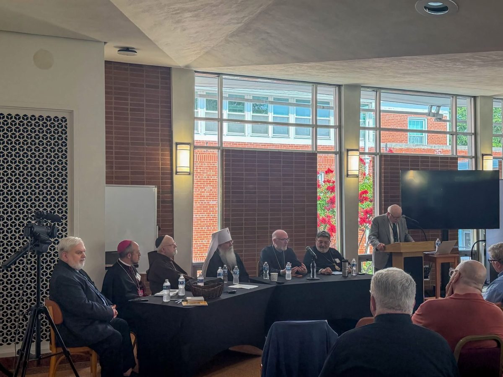
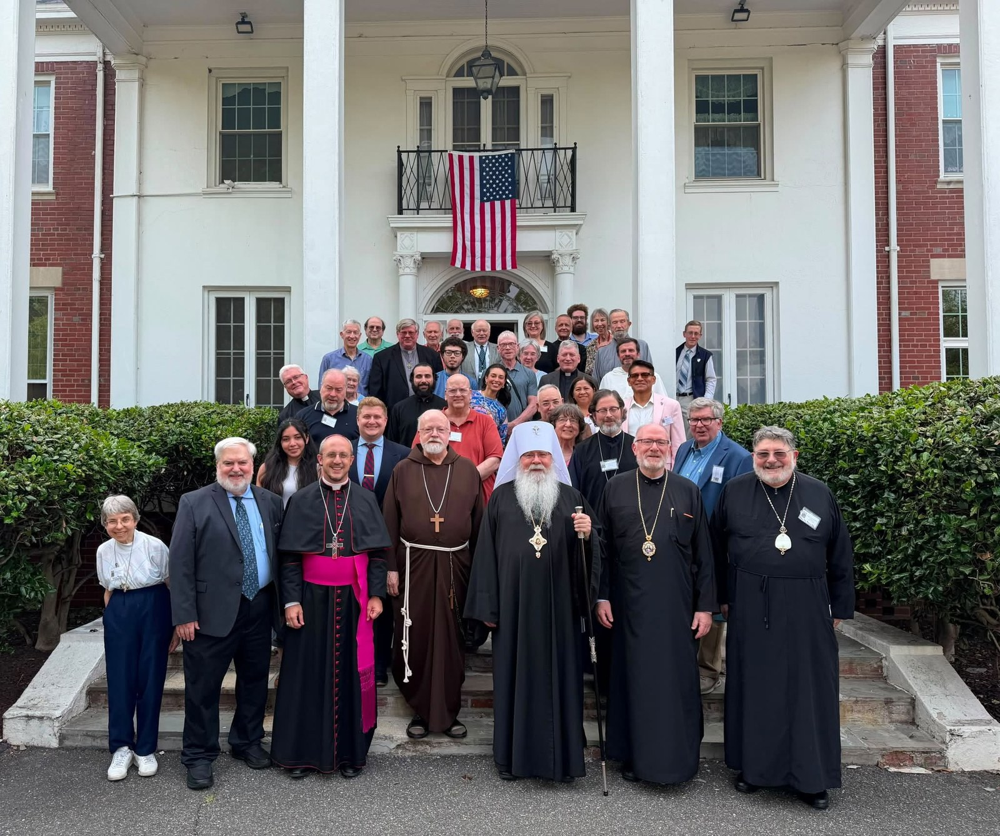
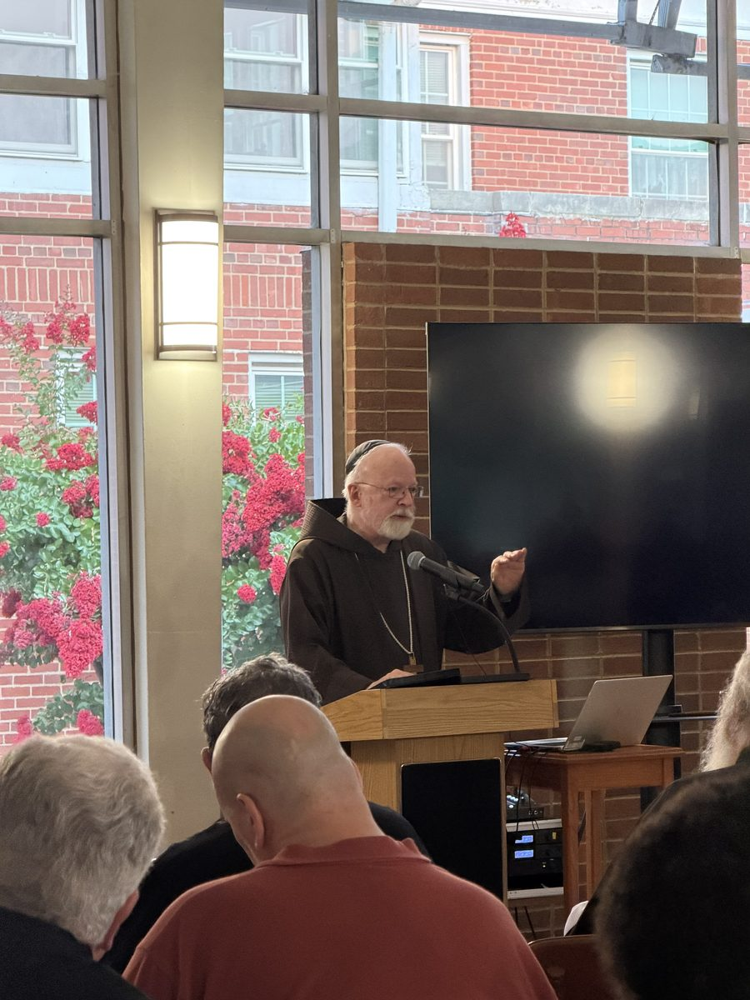
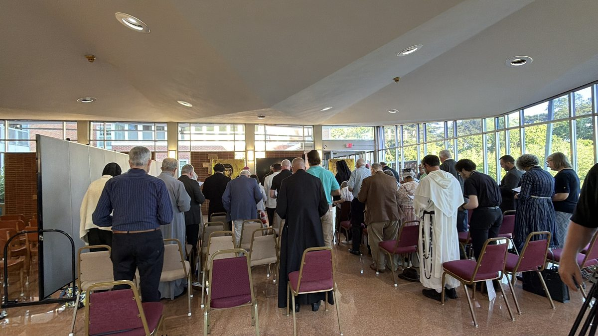
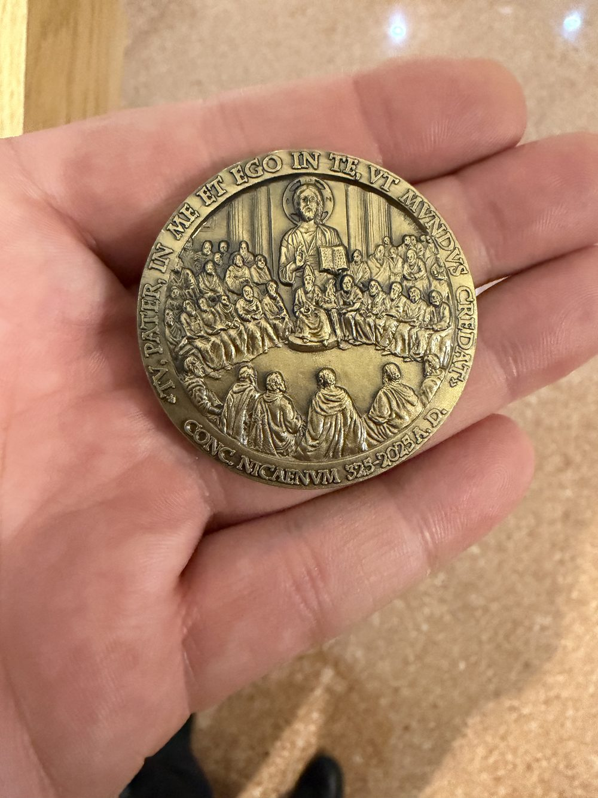
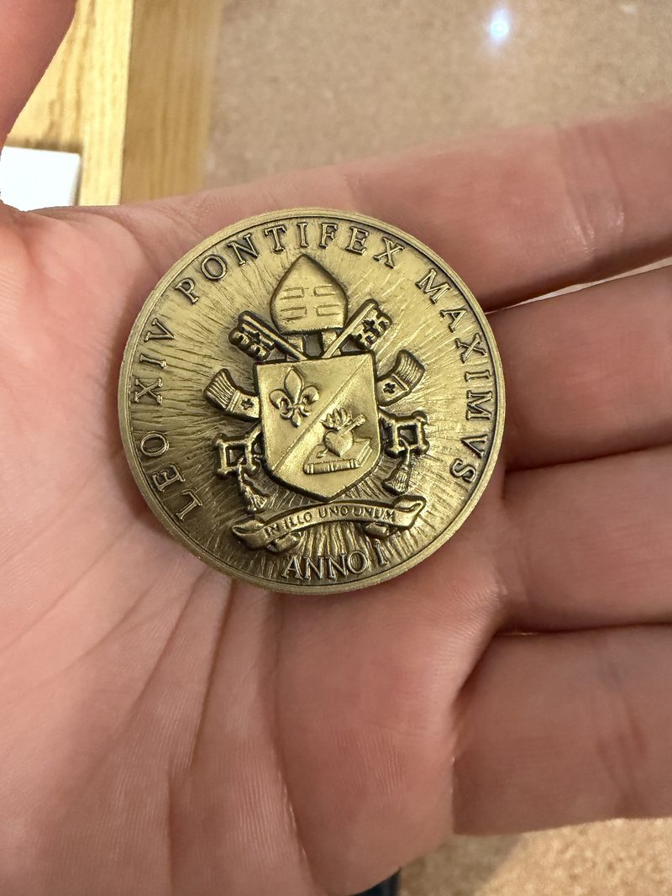
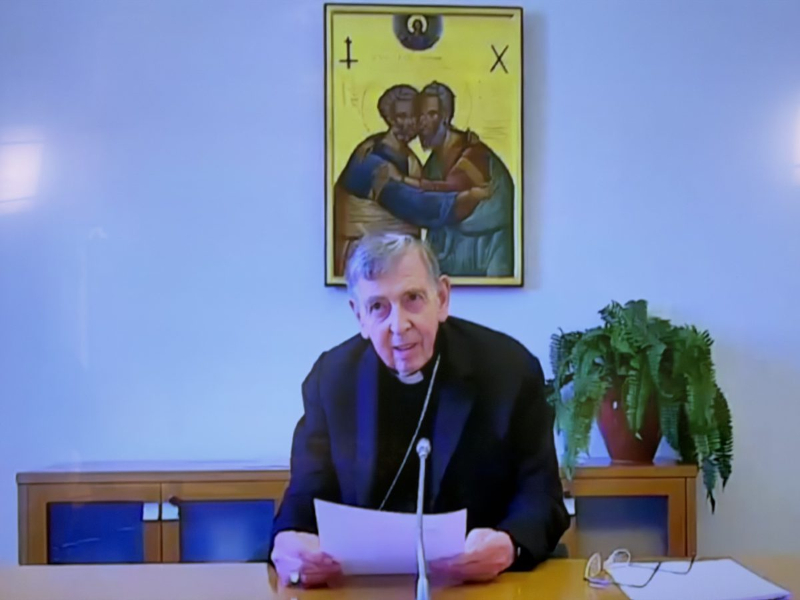
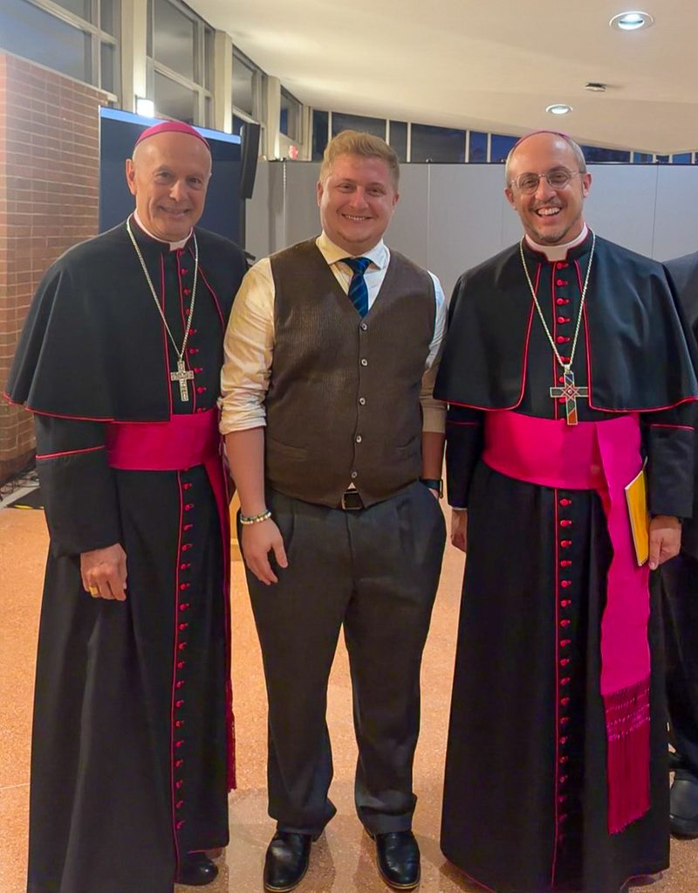
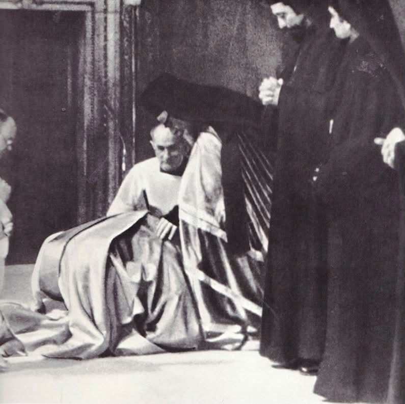

Since 1997, an annual gathering of Catholic and Orthodox hierarchs, scholars, and laity working for the unity of East and West. The Foundation was honored to co-sponsor the thirtieth conference at the Saint John Paul II Shrine and Retreat House in Washington, D.C.

The Orientale Lumen conferences were founded by Jack Figel in 1997, taking their name from John Paul II’s 1995 apostolic letter on the treasures of the Christian East, and they remain the only lay ecumenical movement of their kind blessed by bishops and patriarchs of both churches. For three decades they have brought East and West into the same room, year after year, to pray, argue charitably, and eat at the same table — the slow, patient work on which any future reunion will be built.
The thirtieth conference was co-sponsored by the Orientale Lumen Foundation, the Likoudis Legacy Foundation, the Washington Theological Consortium, and the Huffington Ecumenical Institute at Hellenic College Holy Cross.
Orientale Lumen XXX gathered at the Saint John Paul II Shrine and Retreat House in Washington from July 13 to 15, 2026, under the theme “Ecumenism at a Crossroad: Consensus Achieved — What’s Next?” The plenary lectures were given by speakers including Cardinal Seán O’Malley. Archbishop Flavio Pace, Secretary of the Dicastery for Promoting Christian Unity, took part throughout, and Archbishop Gabriele Caccia, Apostolic Nuncio to the United States, attended. They were joined by Metropolitan Tikhon, Bishop Anthony Vrame, Bishop John Michael Botean, and Dr. John Borelli of Georgetown University, who moderated. Video addresses were contributed by Metropolitan Job of Pisidia, Orthodox co-chair of the international dialogue, by Archbishop Borys Gudziak of the Ukrainian Greek Catholic Archeparchy of Philadelphia, and by Archimandrite Cyril Hovorun of the Orthodox Church of Ukraine.



On the opening evening, Archbishop Caccia presented the conferences’ founder, Jack Figel, with the official medal of Pope Leo XIV’s first pontifical year, sent by the Holy Father himself. The medal commemorates the 1700th anniversary of the Council of Nicaea and bears Christ’s prayer ut mundus credat, “that the world may believe” — the petition that follows directly on “that they may all be one.”


Three days later the conference closed with a surprise: a video address recorded for the gathering by Cardinal Kurt Koch, Prefect of the Dicastery for Promoting Christian Unity. His subject was reception: how the dialogue’s agreed statements become the faith of the whole Church rather than the property of theologians. He told the gathering it was part of that work.
“Becoming a common heritage could be the definition of reception… In a sense, this Orientale Lumen Conference is also part of this reception process.”
Cardinal Kurt Koch, video address to Orientale Lumen XXX
The conference bore particular fruit for the Foundation’s work. Archbishop Pace agreed to write the foreword to the inaugural issue of The Kydones Review, the Foundation’s journal of Catholic–Orthodox scholarship, and delivered it. Signed copies of James Likoudis’s books were presented to every bishop present. And conversations began with Archbishop Pace about how the Foundation might help cultivate American support for the Catholic Committee for Cultural Collaboration. EWTN News covered the gathering, quoting both the Foundation’s president and its Reading Circle director in its report on the conference.

The conference ended on July 15; the following day, July 16, marked 972 years since the mutual excommunications of 1054. The Foundation’s reflection on the conference and on the millennium now visible on the horizon was published that day.
The Orientale Lumen Foundation › The East–West Reading Guide ›
